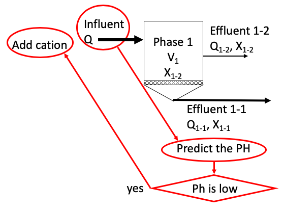
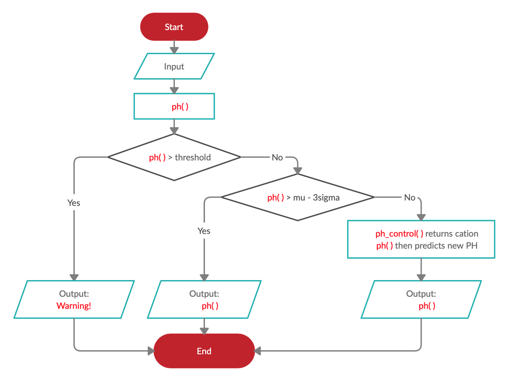

PH Control for One-Phase and Two-Phase Reactor¶
Phase 1 of the digester represents the condition where membrane blocks the solid materials that are part of the effluent. Here we setup the corresponding SRT to define the time required for the solids to dilute in phase 1. As mentioned above, during this phase VFAs are produced, which reduces the ph of the digester.
To prevent the ph from further decreasing, we developed the ph-control algorithm that allows us to adjust the ph at the beginning of each phase.
Implemented in this study ph-control method (see ph_control function in adm1f_utils.py) is designed to implement data consistent inversion method in PH control (described in the section below). The ph method can be used to predict the PH value. The ph_control method is used to return the cation concentration to be changed in the input in order to reach the target PH value (\(\mu^*\)). \(\sigma\) is used to denote the standard deviation we allow the PH value to vary around \(\mu^*\).
The following figure describes the basic strategy used for PH control
The idea can also be explained in the following flow chart
Similar idea can then be applied to the two-phase reactor. We can configure the two-phase reactor where volume, flow rate, t_resx (t_resx = SRT-HRT) of each phase can be set manually to simulate the real reactor. The implementations in both phase 1 and 2 are similar to the above implementation in the one-phase reactor, the only difference is that the output of phase 1 is now the input of phase 2.
In the Ipython notebook, reactor_cat(target_1, target_2, **kwargs) function is used to calculate the corresponding cation for each phase in order to control the PH level for each phase. Note that the target PH for phase 1 and 2 (target_1, target_2) can be set different when using this function under the corresponding configurations.